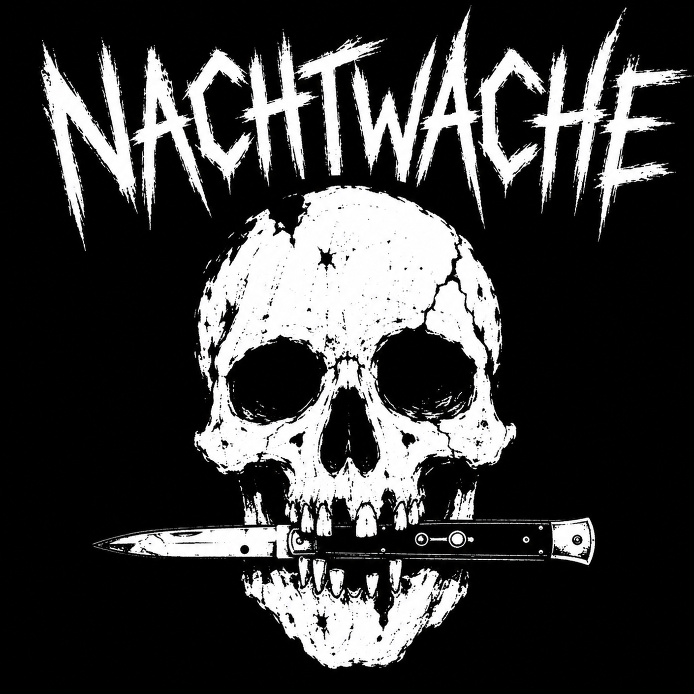

Review
NACHTWACHE - Nachtwache

„… wir würden uns natürlich freuen, wenn ihr Lust habt, darüber zu berichten.“
Liebe NACHTWACHE, ja, ich habe Lust, darüber zu berichten, und herzlichen Glückwunsch: Ihr seid mein schriftlicher Einstand bei RandaleFUNK.
Zuallererst hat mich der Bandname schon angesprochen: so vielsagend wie nichtssagend, aber einfach nur geil! Ich hätte dahinter eher eine Düsterpunk- oder Deathrockband vermutet, aber für eine D-Beat-/Rawpunkband passt er auch wie Knüppel aus dem Sack.
Aber da Namen bekanntlich nur Schall und Rauch sind, kommen wir zum eigentlichen Kernstück: dem gleichnamigen Song vom bald erscheinenden Album Dear World.
Nach eigener Aussage musikalisch zwischen DISCHARGE, ANTI CIMEX und VICTIMS angesiedelt und mit einer ordentlichen Hardcore-Kante versehen, verspricht das Duo nicht zu viel. Straight in die Fresse, als wäre der Teufel ihnen auf den Fersen, und morbide, als wäre der Song während der Nachtwache im Krematorium geschrieben, hämmert sich der Song in die Gehörgänge.
Witzig und gelungen finde ich die Strophen auf Englisch und den Chorus ganz simpel, mit Mitgröhlcharakter, auf Deutsch:
NACHTWACHE!
Bin mal gespannt, was das Album noch zu bieten hat.
Guter Soundtrack für den schlecht gelaunten Krustenpunker!
„Nachtwache“ auf Bandcamp
„Nachtwache“ auf YouTube
NACHTWACHE auf Instagram